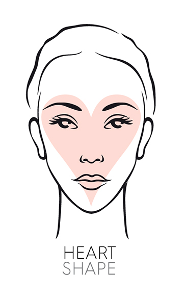
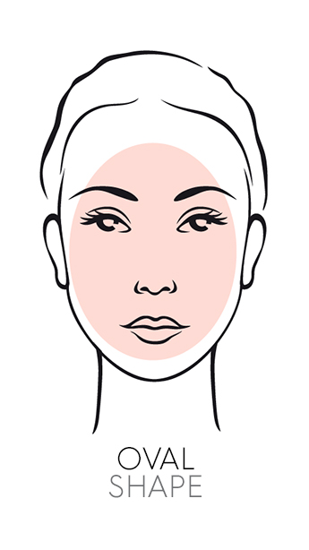
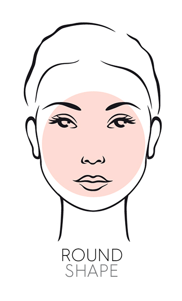
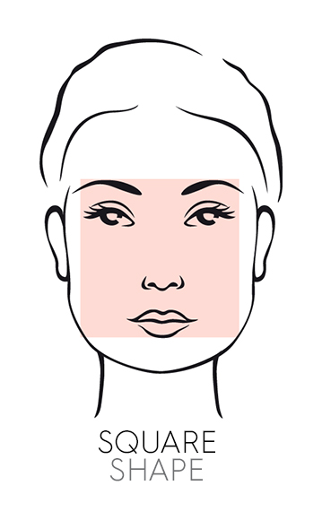

Tips
Heart face shapes need to add some length to their shape and to create width around narrow chins.
Hairstyles to Try
Any textured chin-length hairstyles will suit best.If bangs are wanted make sure that they are side-swept bangs not straight across as blunt cut bangs will only make your face shape shorter and wider.Shoulder length cuts with wispy layers that kick out will also work very well.Height on top will work but only if they belong to shoulder length or longer hairstyles.
Hairstyles to Avoid
Short, full hairstyles like slicked back looks that emphasize your upper face.Short styles with heavy straight across bangs that create an upside down triangular shape.
If you find that you have an oval face shape, then you're in luck! Having an oval face shape means that you can wear your hair in almost any style.
Hairstyles to Try
Any shape and style can be worn, whether it's short, long, layered or bobbed.The only thing to consider with an oval face shape is what part of your face you want to accentuate. This is where you can get creative with bangs or how you style your hair everyday
Hairstyles to Avoid
The main thing to consider is to not choose hairstyles that hang in your face or eyes.Or hairstyles that just cover over your beautiful face shape.
The object is to add length and avoid width.
Hairstyles to Try
Hairstyles with height and fullness at the crown will give the illusion of a narrower face shape, particularly those short in length.Longer hairstyles or ones that are kept close to the cheeks with no width will look better.Middle parts are great for creating the illusion of narrow length.No bangs are the ideal as the focus point becomes the bridge of the nose, creating a more oval shape. If bangs are used they should be swept across, or in the case of solid bangs, only where there is substantial height on the top.Short hairstyles are great and do not suffocate small round faces.
Hairstyles to Avoid
Hairstyles that add volume through the sides such as chin length bob cuts, straight or kicking out in design.Side parts and heavy straight across bangs create a wider shorter shape and therefore should be avoided at all costs on hairstyles without any height.
With a square face shape, your main aim should be to soften your strong jawline.
Hairstyles to Try
Wispy forward falling hair onto your face will soften your jaw line.Wearing bangs swept over to one side will create diagonal movement to minimize square shapes.Short to medium length hair will also suit you, especially if the style is rounded in shape or has wispy ends.Styles with height at the crown will also work in your favor.
Hairstyles to Avoid
Avoid blunt bobs, especially sitting at chin length with straight heavy bangs as this will accentuate your jaw line and squareness.Middle parts with solid bangs can also work against you.



